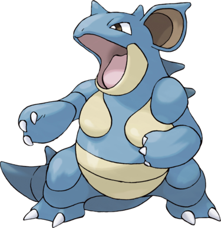

Nidoqueen est un Pokémon bipède au corps cuirassé de couleur principalement bleu à l'exception de son menton, sa poitrine et son abdomen étant de couleur crème. Elle dispose d'une corne sur le front ainsi qu'une colonne de pics allant du dos jusqu'à sa queue. Ses oreilles possèdent un pic et l'intérieur est marron.